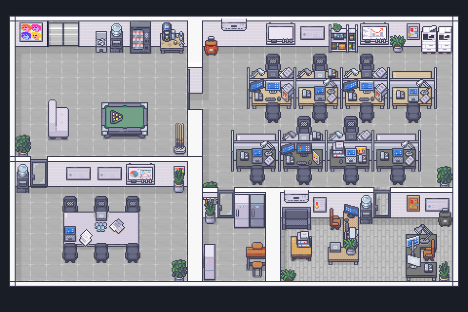

A face for each agent.
Real observed agents keep their own identities. Up to eight characters share the floor, with a roster for up to fifty.
A little office for your AI agents
Your agent is working. Now it has a desk.
Turn real agent activity into a pixel office: working characters, little status bubbles, and captured replies in the game’s dialogue box. The coffee is imaginary. The work is yours.
Local-first · MCP connection · No AI narrator

Real observed agents keep their own identities. Up to eight characters share the floor, with a roster for up to fifty.
Captured assistant replies appear in the native dialogue HUD. Genuine deltas update live when the host supplies them.
No model writes little speeches or summarizes your work. The office displays what your integration actually reports.
The visitor pass
This playground runs the real game with four scripted sample coworkers. It does not connect to your agents, contact a local service, or make model calls.

Press Play and watch four coworkers tackle a very important coffee break: separate jobs, a tiny meeting, and plenty to say.
An automatic short scene with character dialogue, pause/resume, and replay. No account needed.
From pretend work to your work

The desktop app includes its runtime. Open Settings for one generic MCP configuration—there is no provider picker.
Register the MCP connection in your host. Ask your agent to call office_setup with its actual session and agent identity. The first intentional setup requests the office window.
The host forwards actual activity and supported assistant output. Select a character to read its latest reply; switch to Settings without losing your office.
Free preview · No account required
Version 0.2.1 · Preview
Download an app with its runtime included. These preview builds are unsigned; macOS is not notarized. Your operating system may require approval to open them.
Windows: open the x64 installer, finish setup, then launch Corecent Office from Start.
macOS: choose Apple silicon or Intel, open the DMG, drag Corecent Office to Applications, then open it.
If macOS blocks this unsigned preview, verify the downloaded file and use System Settings → Privacy & Security → Open Anyway. Do not disable system-wide security.
Ubuntu/Debian: open the DEB in your package installer. Fedora/RPM systems: use the RPM package installer. No Node.js or terminal is needed for normal use.
Open the app, visit Settings, and copy the generic MCP connection into your host. Ask your agent to call office_setup. Real streaming requires a host integration that supplies assistant-output chunks.
Native runtime checks run in CI. Graphical install/uninstall, signing, and macOS notarization remain release gates.
Project source (access required) ↗
A small but important distinction
Native compatibility hooks can capture completed replies. A host integration with actual assistant-output callbacks can stream real chunks through the fixed helper discovered by MCP. MCP alone cannot watch every agent’s output.
Animation is presentation—not proof that agents are discussing your task. Missing activity never becomes invented dialogue.
Technical playground
Scene recipes, a JSON browser, command references, and the original playful manuals. These are developer/legacy tools, separate from the desktop app’s generic MCP setup.
Before you steal the office stapler
No. This is a static introduction and a fictional browser playground. Real observation runs in the local desktop/service installation. The website does not scan local ports, install connectors, or read your conversations.
The office does not make model calls to narrate or summarize activity. Host hooks and structured output forwarding do not require per-token model tool calls. Optional MCP setup/status/report calls still use ordinary tool-context tokens; the whole integration is not universally token-free.
No. Settings separates what the host declares from what the office has actually received: activity, completed replies, or live chunks. The host must supply real callbacks or structured output. A completed reply is never split into fake streaming text.
Supported assistant-visible replies stay in local service memory, limited to the latest 16 KiB per agent. Prompt fields, tool payloads, hidden reasoning, and unrelated transcript history are excluded. Visible replies can themselves quote your data or code.
Yes. The local office can pause animation while keeping captured text readable. Reading an older dialogue page preserves your place as new chunks arrive. The browser demo starts paused when reduced motion is preferred and can be stopped completely.